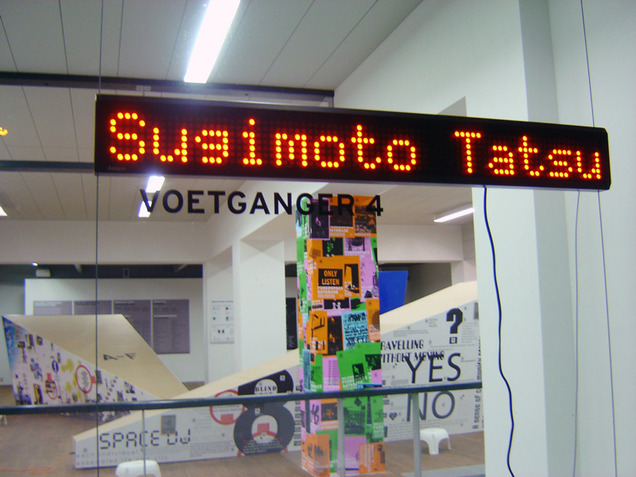
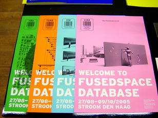
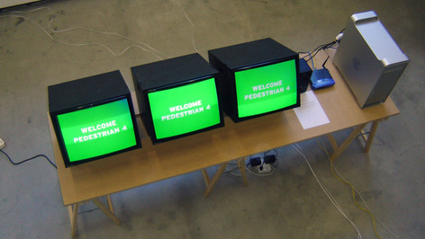
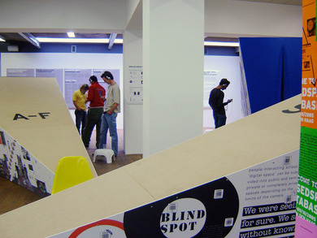
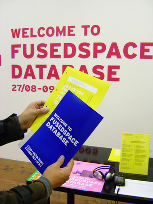

Linked By Air





Welcome to Fusedspace Database
Medium: Print, Exhibition, Mobile
Client: Stroom Gallery
Year: 2006
This exhibition, in The Hague, showed the results of an international competition seeking new ideas about the combination of technology and public space. We decided to show all 307 competition entries. To make this possible we invented display methods and pursued a two-fold approach to space, structuring the content as both a “database” and a “cityscape.”
Cityscape
Visitors wandered among large murals and could use hand-held barcode scanners to find out about each of the projects depicted in the murals. They could also enter into a space in the interior of each mural, where a computer terminal allowed them to search all entries.
Database
A centralized computer server tracked and verbally announced the movements of all the hand-held barcode scanners, helping turn the gallery into a more civic space. When they left the gallery, visitors received a “receipt” with printed information about each of the projects they scanned.